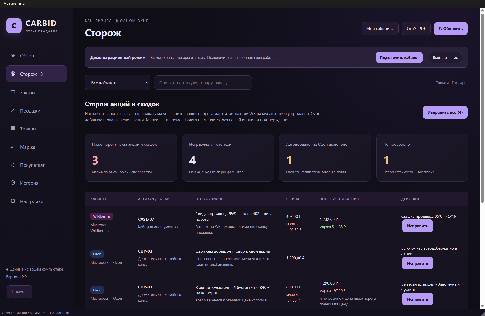
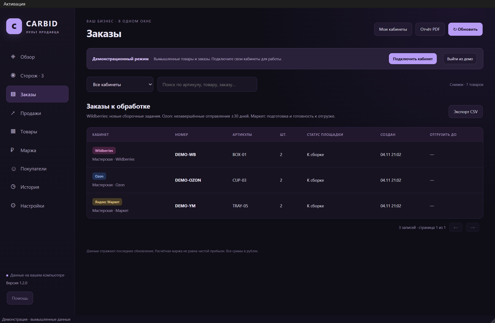
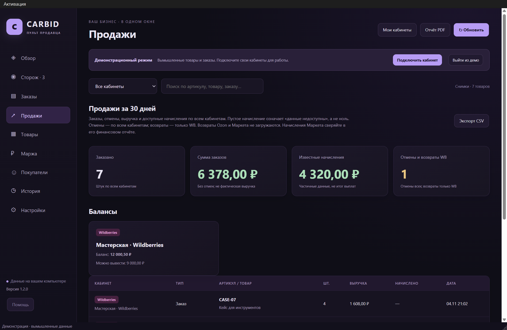
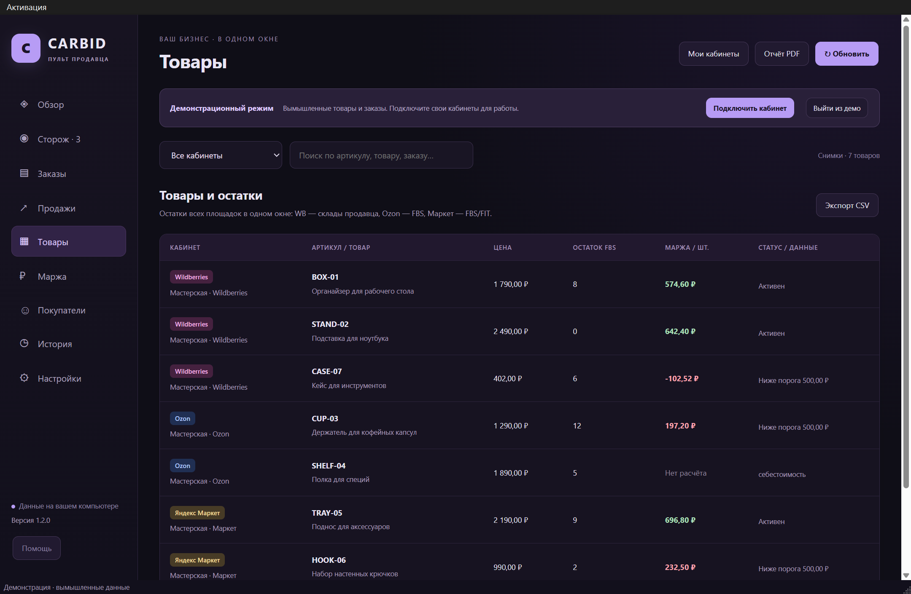
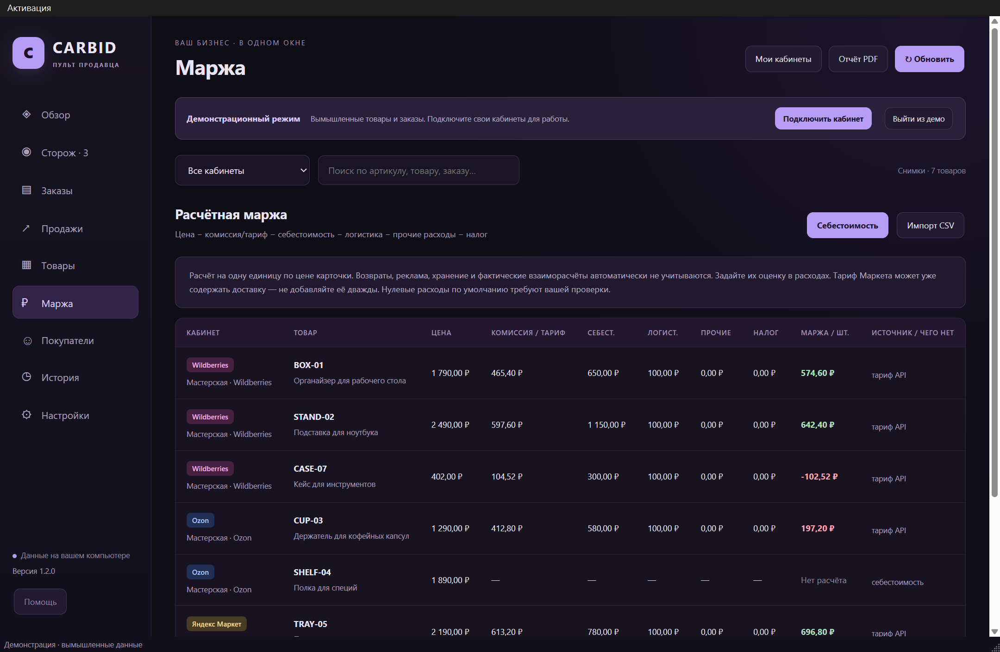
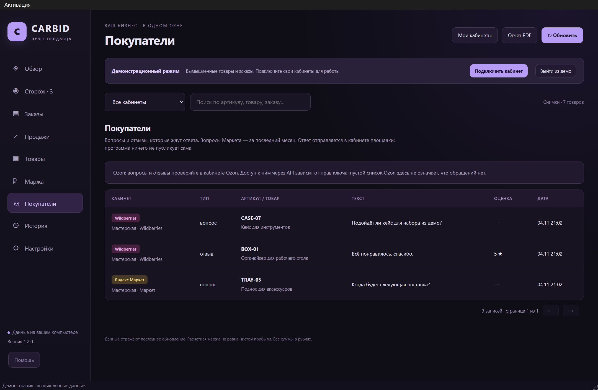
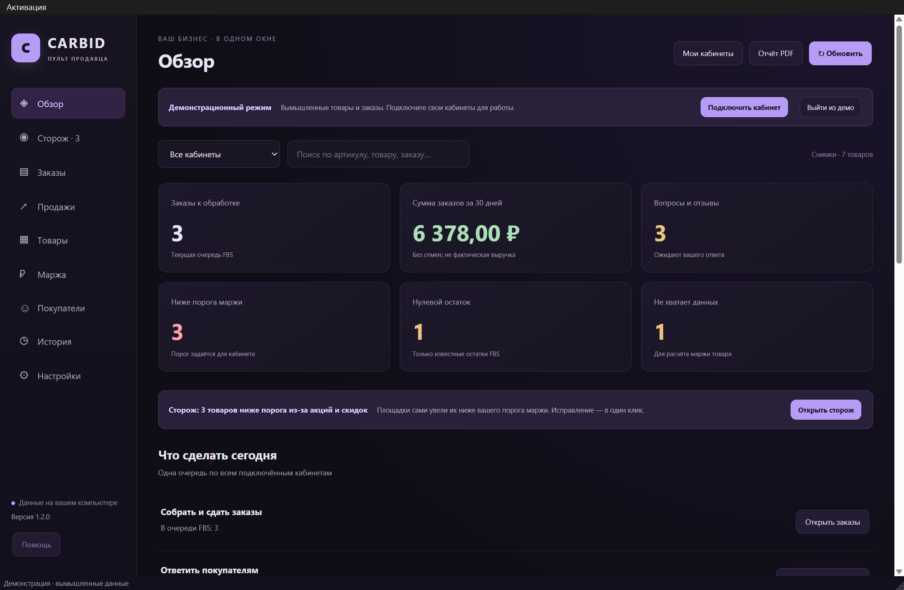

Все ваши кабинеты и продажи в одном окне
Программа для Windows собирает заказы FBS, остатки, продажи за 30 дней, вопросы покупателей и маржу Wildberries, Ozon и Яндекс Маркета. А ещё находит акции ниже вашего порога и исправляет их только по вашей кнопке.
Бесплатно — демонстрация на вымышленных данных. Свои кабинеты подключаются кодом активации. Ключи API остаются на вашем компьютере.
Пример: демонстрация на вымышленных данных, порог маржи — 500 ₽ с единицы
товаров ниже порога маржи из-за акций и скидок
из них — расчётная маржа меньше нуля
с каждой штуки: кейс на Wildberries, скидка продавца 85%, цена 402 ₽

Что делает Пульт и чего не делает
Коротко и по пунктам — только то, что проверено.
Что делает
- Показывает товары, у которых расчётная маржа после акций и скидок ниже вашего порога.
- Wildberries: находит раздутую скидку продавца и предлагает наибольшую скидку, при которой маржа не ниже порога.
- Ozon: находит автодобавление в акции и участие в акциях по цене ниже порога.
- Яндекс Маркет: находит промо по цене ниже порога.
- Исправляет только по вашей кнопке, после окна подтверждения со списком изменений. Каждое исправление пишется в журнал.
Чего не делает
- Не меняет цены, остатки, заказы и карточки сам. Из изменений возможны три: скидка WB вниз, выключение автодобавления на Ozon, выход из акции. Без вашей кнопки — ни одного.
- Не оценивает товары без себестоимости: их маржа неизвестна.
- Не поднимает базовую цену: если товар ниже порога и без скидки, цену поднимаете сами.
- Нет FBO и FBW, рекламы и полных финансовых отчётов. Обращения Ozon и возвраты Ozon и Маркета не загружаются. Фонового обновления нет: загрузка идёт по кнопке «Обновить».
Что нужно ввести
- API-ключ каждого кабинета. Для Ozon ещё Client-Id, для Маркета — businessId и campaignId.
- Себестоимость товаров — вручную или файлом CSV.
- Налог, логистику, прочие расходы и порог маржи — для каждого кабинета.
- Чтобы работала кнопка «Исправить», у ключа нужно право записи цен (WB, Ozon) и управления акциями (Ozon, Маркет). Без него Пульт только показывает проблемы.
- Код активации — для своих кабинетов. Демонстрация работает без него.
Что проверено на живых данных
- Все 18 разделов WB, Ozon и Маркета загружены на живых кабинетах 04.11.2026, только чтение: заказы, товары, акции, продажи, обращения и баланс.
- Сторож — на живых кабинетах, только чтение. Кнопки «Исправить» проверены автоматическими тестами на синтетических ответах площадок и в демонстрации.
- Версия 1.2: 66 автоматических тестов, готовый EXE — 14 проверок на обычной и минимальной ширине окна, независимый QA — PASS.
- Windows x64, проверено на Windows 11.
Чем это отличается от бесплатных программ. Бесплатные проекты с открытым кодом для похожих задач, которые мы смотрели, рассчитаны на свой сервер: их ставят через Docker или настраивают среду вручную. Пульт — обычная программа для Windows: распакуйте архив и запустите CARBID.exe — откроется демонстрация. Сервер, Docker и Python не нужны. Windows может спросить подтверждение: программа не подписана.
Сторож акций
Площадки сами ставят товары в акции и раздувают скидки. Цена падает, комиссия считается от новой цены — и с каждой продажи вы получаете меньше, чем закладывали. Сторож сравнивает цену после акций с вашими расходами и показывает, где маржа ниже порога.
Раздутая скидка продавца
Автоакции WB поднимают скидку продавца. Сторож предлагает наибольшую скидку, при которой маржа не ниже вашего порога. Базовая цена не меняется.
Автодобавление в акции
Ozon сам добавляет товары в свои акции. Сторож выключает автодобавление и выводит из акций, где цена ниже порога маржи.
Промо ниже порога
Показывает товары в промо Маркета с маржой ниже порога и выводит их из промо.
Ничего не меняется без вашей кнопки и окна подтверждения. Каждое исправление записывается в журнал. Обычное обновление данных только читает кабинеты.
Всё необходимое — в одном окне
Несколько кабинетов трёх площадок, общая очередь действий и поиск по артикулам, товарам и заказам.






На скриншотах — реальный интерфейс версии 1.2 с демонстрационными данными.
Попробуйте бесплатно
Сначала посмотрите программу на демонстрационных данных — без кода, без ключей и без оплаты.
Скачайте и распакуйте
Архив для Windows x64, около 175 МБ. Запустите Install.cmd или CARBID.exe — откроется демонстрация.
Купите код активации
4 999 ₽ разово на Яндекс Маркете: код активации и инструкция приходят на e-mail.
Подключите свои кабинеты
Меню «Активация» → введите код, добавьте ключи API своих кабинетов и обновите данные.
Программа не подписана коммерческим сертификатом, поэтому Windows может показать «Неизвестный издатель». Нажмите «Подробнее» → «Выполнить в любом случае».
Не получилось поставить — напишите, помогу в переписке: carbidproduction@mail.ru
Цена
CARBID · Пульт продавца
4 999 ₽- Разовая покупка, без подписки.
- Код активации подходит ко всем версиям 1.x.
- Windows x64, проверено на Windows 11. Интерфейс на русском.
Начните с ключа только на чтение — Пульт покажет проблемы и ничего не изменит. Код активации и инструкция придут на e-mail из заказа; не пришли — напишите на carbidproduction@mail.ru, отвечу лично.
Первым 10 покупателям — помогу подключить кабинеты в переписке и разберём первый отчёт сторожа. Осталось мест: 10 из 10.
Нужна флешка с доставкой — USB-комплект на Wildberries, он дороже из-за носителя и доставки. Без флешки — код на e-mail за 4 999 ₽.
Чего в версии 1.2 нет
- FBO и FBW, рекламы и полных финансовых отчётов.
- Вопросов и отзывов Ozon, возвратов Ozon и Маркета.
- Фонового обновления и мобильного приложения: данные обновляются по кнопке.
Маржа в программе — расчётная по вашим расходам, а не чистая прибыль по фактическим выплатам. Работа подключений зависит от API площадок.
Вопросы
Безопасно ли вводить ключи API?
Ключи вводятся только на вашем компьютере и хранятся зашифрованными средствами Windows для вашей учётной записи. Продавцу программы их отправлять не нужно, программа не передаёт их третьим сторонам. В резервную копию ключи не попадают.
Может ли программа что-то сломать в кабинете?
Обновление только читает данные. Изменять программа может одно — скидку и участие в акциях, и только через сторож, по вашей кнопке и после окна подтверждения. Заказы, остатки и карточки она не трогает.
Нужен ли сервер или подписка?
Нет. Программа работает на вашем компьютере, данные хранятся локально. Интернет нужен только для обновления данных из кабинетов.
Это официальный продукт Wildberries, Ozon или Маркета?
Нет. Названия площадок обозначают совместимость: программа работает через их открытые API.